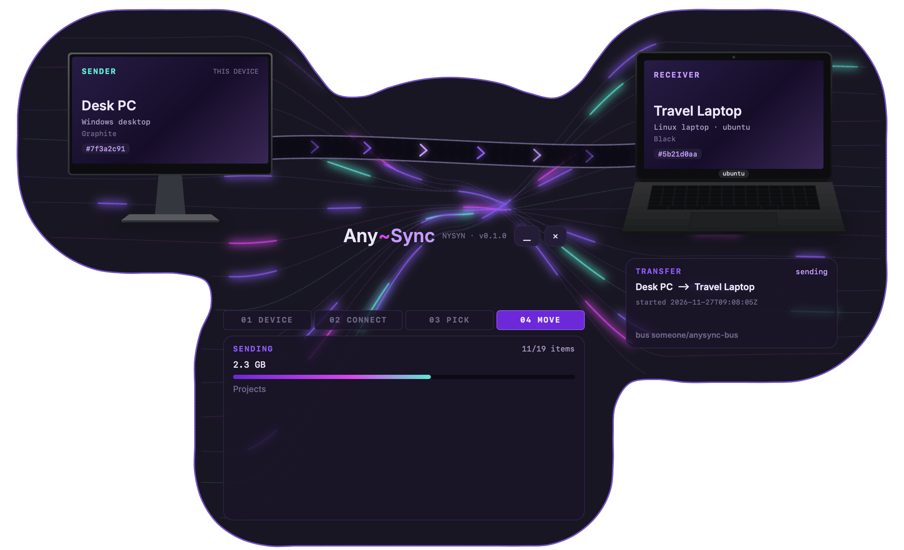

Your setup, on any computer.
Any~Sync moves your editor settings, keys, dotfiles, folders and lists of installed tools from one computer to another, whichever of macOS, Windows and Linux each one runs. Files go straight device to device, end-to-end encrypted, and each item lands where the new system keeps it.
AnY.SYNcMAC ⇄ WINDOWS ⇄ LINUXCoded in Rust & RuneMIT
